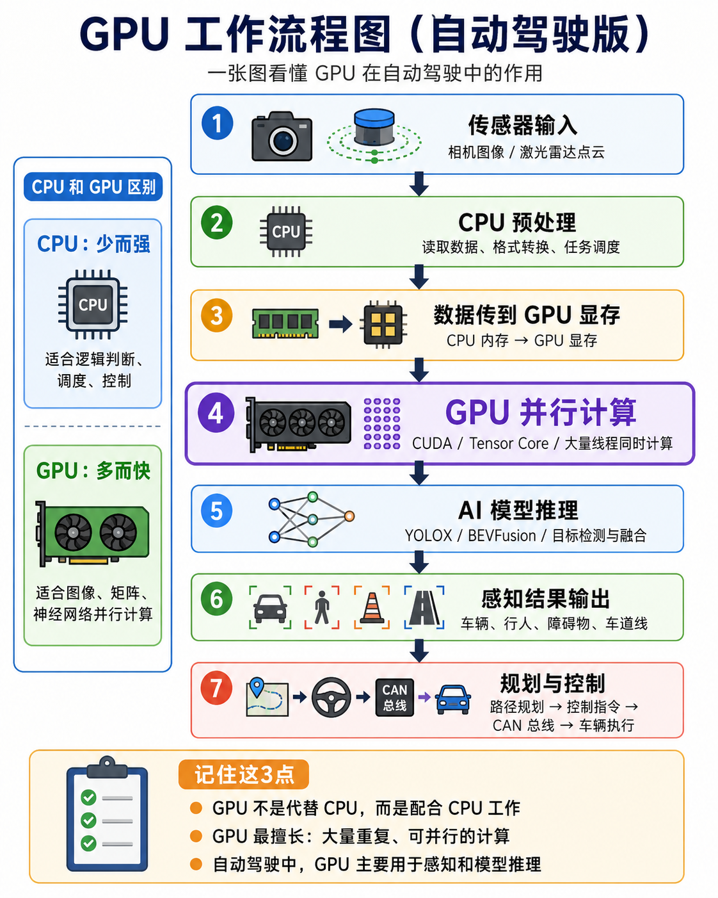
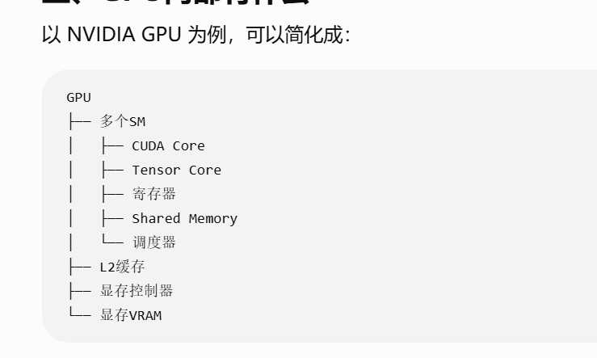

GPU 工作流程图（自动驾驶版）
从传感器原始数据到车辆执行，一张图看懂 CPU、GPU、AI 模型与 CAN 总线如何配合。

GPU 内部可以怎样理解

SM 可以看成并行计算小工厂；CUDA Core 执行通用数值运算，Tensor Core 加速矩阵乘加，寄存器和 Shared Memory 保存高速临时数据，显存 VRAM 存放模型、输入和中间特征。
七个步骤
- 传感器输入相机提供图像，激光雷达提供点云。
- CPU 预处理读取数据、转换格式，并负责系统调度。
- 传入 GPU 显存数据从系统内存复制到 GPU 可访问的显存。
- GPU 并行计算CUDA Core 与 Tensor Core 同时处理大量相似运算。
- AI 模型推理YOLOX、BEVFusion 等模型完成目标检测和多传感器融合。
- 输出感知结果得到车辆、行人、障碍物和车道线等结构化信息。
- 规划与控制CPU 根据结果规划路径，通过 CAN 总线向车辆发送控制指令。
- GPU 不替代 CPU，而是与 CPU 分工协作。
- GPU 最擅长大量重复、可以并行执行的计算。
- 在自动驾驶中，GPU 主要承担感知和 AI 模型推理。